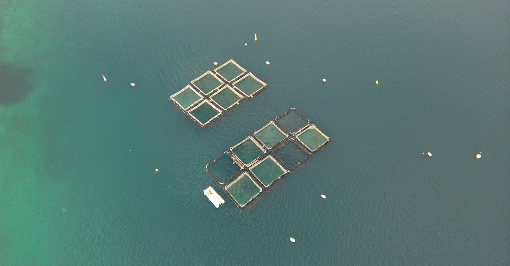

L'appel à une alimentation plus responsable : le cas des 'Blue Foods'
Alors que la Journée de la Terre approche à grands pas, une prise de conscience globale s'intensifie quant à notre impact sur la planète. Le Chef Andrew Zimmern, figure reconnue dans le monde de la gastronomie et de la restauration, a récemment mis en lumière un concept essentiel pour l'avenir : les 'blue foods'. Ce terme englobe une vaste catégorie d'aliments issus de l'eau, allant des poissons et fruits de mer aux algues et autres organismes aquatiques. Loin d'être une simple tendance culinaire, cette approche représente une stratégie fondamentale pour relever deux défis majeurs de notre siècle : le changement climatique et la sécurité alimentaire mondiale. Zimmern insiste sur le fait que ces ressources, souvent sous-estimées, détiennent un potentiel énorme pour nourrir une population croissante tout en minimisant notre empreinte écologique. L'idée est de passer d'une vision où l'océan est une source illimitée à une gestion raisonnée et durable, bénéfique pour l'écosystème et, par extension, pour nos économies. La durabilité n'est plus une option, c'est une nécessité qui redessine nos modes de consommation et, potentiellement, nos stratégies d'investissement.
👉 À lire : Guerre Iran : L'Amérique, un roc face aux turbulences ?

Les 'Blue Foods' : un levier contre le dérèglement climatique et la faim
Le lien entre notre assiette et le climat est de plus en plus évident. Les méthodes de production alimentaire traditionnelles, notamment dans l'agriculture terrestre, sont souvent gourmandes en ressources naturelles (eau, terre) et génèrent une part non négligeable des émissions de gaz à effet de serre. Les 'blue foods', en revanche, présentent des avantages écologiques significatifs. Les systèmes d'aquaculture durable, par exemple, nécessitent généralement moins d'espace et d'eau douce que l'élevage terrestre. De plus, certaines cultures marines comme les algues jouent un rôle actif dans la séquestration du carbone. Andrew Zimmern souligne que diversifier nos sources de protéines vers ces ressources aquatiques peut alléger la pression sur les écosystèmes terrestres. Il est crucial de comprendre que la transition vers une alimentation axée sur les 'blue foods' n'est pas seulement une question environnementale ; c'est aussi une réponse directe à la problématique de la faim dans le monde. En exploitant de manière responsable les ressources marines, nous pouvons assurer une source de nutriments essentiels, notamment des protéines de haute qualité, à des coûts potentiellement plus abordables pour les populations vulnérables. Cette transformation alimentaire, si elle est bien gérée, pourrait redéfinir les chaînes d'approvisionnement mondiales et créer de nouvelles opportunités économiques.
👉 À lire : Trêve Israël-Liban : Opportunités pour le Trading Forex IA
Implications pour les marchés financiers et l'investissement intelligent
La prise de conscience croissante autour des 'blue foods' et de l'alimentation durable a des répercussions directes sur les marchés financiers. Les investisseurs avisés commencent à reconnaître le potentiel de croissance des entreprises engagées dans l'aquaculture responsable, la pêche durable, et la transformation de produits aquatiques. Il ne s'agit plus seulement de performance financière, mais aussi d'aligner ses investissements avec des valeurs éthiques et environnementales. Dans ce contexte, l'intelligence artificielle, et plus particulièrement les agents IA spécialisés dans le trading, peuvent jouer un rôle clé. Ces outils sophistiqués sont capables d'analyser en temps réel une multitude de données, incluant les tendances de consommation, les rapports sur la durabilité des entreprises, les réglementations environnementales, et même les conditions météorologiques affectant les pêcheries. Un agent IA peut ainsi identifier des opportunités d'investissement dans le secteur des 'blue foods' bien avant qu'elles ne deviennent évidentes pour les acteurs traditionnels. La capacité de ces systèmes à traiter des volumes massifs d'informations permet d'anticiper les mouvements du marché liés à la demande croissante pour des produits aquatiques durables, ou encore les impacts des politiques environnementales sur les entreprises du secteur. Cette approche analytique, propre au trading automatisé par IA, offre un avantage concurrentiel significatif pour naviguer dans ces marchés en pleine mutation.
L'IA au service de l'alimentation durable et du trading
La synergie entre l'alimentation durable, notamment via les 'blue foods', et les technologies d'IA appliquées au trading est un domaine prometteur. Imaginez un agent IA qui non seulement identifie les entreprises aquacoles les plus performantes et écologiques, mais optimise également les transactions sur les marchés des matières premières associées, comme les algues ou les farines de poisson, utilisées dans l'alimentation animale. Les algorithmes d'apprentissage automatique peuvent prédire les fluctuations de prix basées sur des facteurs complexes : données de capture, rapports de santé des stocks de poissons, évolution des réglementations, voire même l'impact des événements climatiques sur les zones de pêche. Pour un trader, cela se traduit par une capacité accrue à prendre des décisions éclairées, 24h/24, sans l'influence des émotions humaines. L'agent IA de ForexBot AI, par exemple, est conçu pour naviguer sur les marchés financiers avec une précision remarquable. Bien que son cœur de métier soit le trading de devises, les principes d'analyse de données massives et de prise de décision rapide s'appliquent à tous les marchés dynamiques. L'essor des 'blue foods' crée de nouvelles corrélations et opportunités sur le marché des changes, notamment via les devises des pays dont l'économie repose fortement sur les exportations de produits aquatiques. Un trader utilisant une IA comme celle de ForexBot AI peut potentiellement tirer parti de ces nouvelles dynamiques mondiales, en anticipant les flux financiers liés à cette révolution alimentaire verte.
Conclusion : Investir dans l'avenir, durablement
L'alimentation bleue n'est pas une simple tendance passagère, mais une composante essentielle d'un avenir viable et prospère. Les leçons tirées par le Chef Andrew Zimmern résonnent bien au-delà des cuisines : elles touchent à notre économie, à notre environnement et à notre capacité à nourrir la planète. Pour les investisseurs, cela représente une opportunité unique de participer à une transformation positive tout en recherchant des rendements. Les marchés financiers évoluent, intégrant de plus en plus les critères de durabilité. Dans ce paysage complexe et en rapide mutation, les outils d'analyse avancée comme les agents IA de trading offrent un avantage indéniable. Ils permettent de décrypter les signaux faibles, d'anticiper les tendances et d'optimiser les stratégies, y compris dans les secteurs émergents comme celui des 'blue foods'. En choisissant d'investir intelligemment, et potentiellement en s'appuyant sur l'automatisation par IA, vous vous positionnez non seulement pour le succès financier, mais aussi pour contribuer à un monde plus durable. L'avenir se construit aujourd'hui, dans nos assiettes comme sur nos écrans de trading.